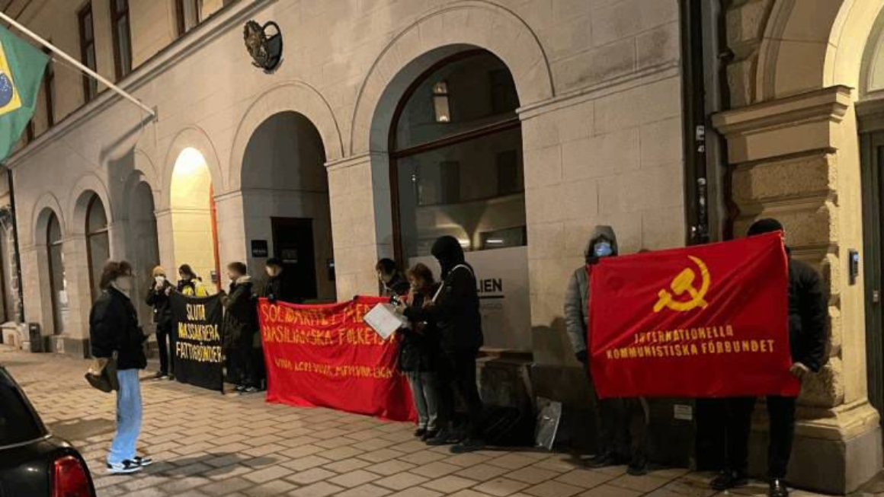
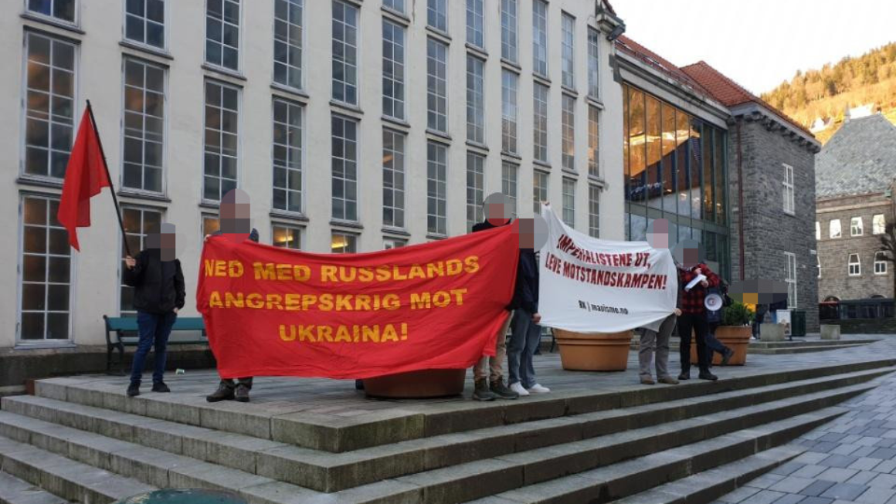

{kind=link}
 The Court of Cassation has decided to leave Alfredo so to the "41 bis"!**
The Court of Cassation has decided to leave Alfredo so to the "41 bis"!**
[This lan. PDF][This lan. ODT][This lan. MD][This lan. TXT][This lan. TXT LIST]
Please select your language 请选择你的语言:
Author: Verein der Neuen Demokratie
Description: We reproduce, today, at the end of the 365th day of the beginning of the war of aggression of Russian imperialism against Ukrainial, the statement of ...
Time: 2023-02-24T16:12:00+01:00
Images: []
We reproduce, today, at the end of the 365th day of the beginning of the war of the Russian imperialism against Ukrainial, the statement of the Peru Popopular Movement, which we published on February 27, 2022, because it retains all its softness and actuality, even more so when it is heard to speak to All the hierarchasimperialists of "Peace Conversations" and even an "initiative" of the Chinese socialistas has even been published, which in summary the newspaper El País, presents: thus presents:
"In the middle of the growing pressures of Washington and Brussels, Beijing has intended to present this Friday as a neutral mediator for peace, although it continues to balances. China has emphasized that the only viable solution will be found through dialogue and negotiation and harete. country will play a "constructive role" for this, although it does not offer more details about it. "
_As the inter -imperialist contradiction are seen, for distributing the botin, in the oppressed nation of Ukraine, it develops in collusion medium and pospugna, the unique hegemonic superpower, Yankee imperialism, squeezes and a great pressure to the Russian imperialists, the atomic superpower, It has to do everything possible to get out of its "new Afghanistan" with the injured but not lost, and not restart its falling on the slope, which only has managed to stop, from 2000 with the measures of the current regimenenced by Putin. Thus, the imperialist is a greater collection to relax between them at that point, which will be to the detriment of the Ukrainian nation. The task of the proletariat and the people of Ukraine is to leave resistance as stated in the MPP statement: _
_ " _ ** What corresponds to the Ukrainian people? By Elgran Lenin, he has defeated the Nazi invasion as part of the Soviet people and the Red Army in the Great Patria War directed by Comrade Stalin, as well as their political leadership will generate, they will reconstitute their communist party as a Marxist-Leninist-Lois Militarized Party, in the middle of the Armedaguerrillera struggle against the invader by developing resistance war, national deliberation war as corresponds to the revolution in an oppressed nation.__Moscú - Dmitry Medvedev, who held the position of Russian president of 2008 to 2012, has once again launched a radical verbal attack. The day after the discourse of Russian President Vladimir Putin to the nation on Tuesday(February 21st), he wrote on his Telegram channel: _ "If Russia ends military operation without a victory, then Russia will no longer exist, it will be torn in parts." ". Regarding the calls of the president of the United States, Joe Biden, so that the Russian troops withdraw from Ukraine, Medvedev said:" If the United States stops supplying weapons to the Dekiev regime, then the war will end "(Frankfurter Rundschau, https: //www.fr.de/politik/russland-ukraine-wieg-usa-biden-twedew-atomwaffen-92103168.html)
Then read the announced statement:
_ Proletarians of all countries, unite!_
Be Russian imperialists of Ukraine!Let's support the Ukrainian people!****
On the 23rd of this month and year, at 5 in the morning, air troops, Mar and Tierra of the Russian army in a lightning operation have penetrated Ukraine's territory, starting their war of imperialist aggression this country, today in its progress They are at the doors of Lacapital Kiev with the open purpose of demolishing the country's government and establishing a puppet administration at all state levels and imposing it "demilitarization" of the country, this is to put it under the protectorate of the Russian imperialist state army.
It may surprise some, that this war of aggression and occupation of the country for the Russian imperialist atomic superpower, has now occurred that this atomic superpower and the unique hegemonic imperialist superpower, Yankee imperialism, as part of the development of its contradiction at noon co -assignment and Pugna, they had returned to the negotiating table to discuss the general agreement on strategic weapons and other "security" problems and, among these, about the expansion of the imperialist alliance NATO to the Payers who previously belonged to the so -called "Warsaw Pact", the Exsemicolonias of Soviet social -imperialism.The exposed facts confirm that the main contradiction in the world sneakers, superpowers and imperialist powers, against all the reviewers of all furs that deny the main contradiction to deny and attack the definition of Maoism. This oppressed-imperialism contradiction remains and will be in perspective any circumstances that could have an impact on the temporarily postponing it after the main becoming again.
The fact that this war of imperialist aggression occurs in Eastern Europe Noniega The importance of oppressed nations could disorient whatucrania is in Europe, but it is one of the countries that were semi -colonies of the USSR. In those countries, revolutions have not developed but a revisionist recatiña and revisionist decomposition that gave margin to unbourg, to a capitalist debauchery, thus passed from one hands to another.
In the specific case of Ukraine, it was temporarily under the dominoesmicolonial mainly of Russian imperialism, to whom he delivered his weapons in 1993 in exchange for protecting his safety. Then in this century the Yankees, Germans, French and others in collusion and struggle to move the floor to the dominant pro-rusage regime in the country and Vinola called "color revolution", then the restoration of the pro-ruso regime and subsequently the " MAIDAN REVOLUTION ", by means of the indirect intervention of these imperialists using the so -called" low -intensity war ", which caused the change of regime to one formed by different groups of the great bourgeoisie dependent on various amosextranjeros such as the current servant of the Yankees Volodimir Zelenski(Disda 019).
En suma, Rusia dejó de ser el país imperialista principal que oprimía aUcrania para pasar a ser el imperialismo yanqui, en colusión y pugna con otrospaíses imperialistas, el imperialismo opresor principal de esa semicolonia.Ante esto vino la agresión directa e indirecta (Hybrid war)Russian delimperialism in 2014 with the occupation of Crimea, the establishment Russian protectorate fingers in the low gift and the rest of the country remained as an area of influence of Yankee imperialism and others.
Now, with its war of aggression Russian imperialism seeks to restore sudominium, but not as semicolonial but with colonial character. This is to define in the current moments.These problems that we see since the beginning of the 90s of the last century, unfortunately not in movement of the class or the people, but parapart from one other imperialist hands, ride borders to what the Second War II was how they were and they are stunning nationalism. All stocol what was established by President Gonzalo, about Germany after the reunification, which was glimpsed and confirmed with all these knowledge, his transit to superpower was not going to be easy as they dream. These developments given from 90 to today, These situations break the balances derived from World War II.
All that imperialist domain of the USSR in Eastern Europe broke down, the Warsaw Pact pieces, in the imperialist and disqualification of revisionism. Therefore the problem was new balance, new confrontation and distribution of forces. Those are the facts that are given so far as stable the report of "the scene" of the International Communist newspaper.
** What corresponds to the Ukrainian people? Failure this political direction but the proletariat and the Ukrainian people have a long Experience of struggle, they have made the socialist revolution directed by the Granlenin, has defeated the Nazi invasion as part of the Soviet people and the red army in the great homeland directed by the comrade Stalin, so They will generate their political leadership, will reconstitute their communist party as a Marxist-Leninist-Malist Militarized Party, in the midst of the Armed Warm fight against the invader developing War of Resistance, National Deliberation War as corresponds to the Revolution in an oppressed nation.
President Mao calls us:
** Unite to overthrow imperialism, revisionism and world reaction, this today is fully in force.As President Gonzalo said: All this weighs more the main contradiction and leads us to reaffirm that the oppressed nations are the basis of larevolution as the main trend in the world. I insist, see that tendency as historical tendency, as a political tendency and as an understanding that opens to the transforming action of the communists to achieve that it is most clearly. It reaffirms, in short, that the oppressed nations are based on the revolution as the main trend of history.
Be Russian imperialists of Ukraine!Let's support the Ukrainian people!
Popular Movement Peru
February 2022
News Source: https://vnd-peru.blogspot.com/2023/02/fuera-imperialistas-rusos-de-ucrania.html
Author: maoist
Description: The request for storage to the investigating judge was formulated by the same PM in the process against four exponents of the Si.Cobas union: ...
Time: 2023-02-24T18:50:00+01:00
Images: []
In Bologna "the umpteenth accusation of criminal association against the Sicobas ", reports the union by explaining that in recent days the prosecutor of the Priprocura in charge of carrying out the thesis of
accusation in the processAgainst four exponents of the local Si Cobas "he asked the Gip'rchic'Arciviata for the accusation of association for criminal. Therefore, it falls, remains the groundlessness detected by the same prosecutor's office, the umpteenth Tesoad theorem equivalent to our union to a criminal organization. In thelospecific, two Of the four defendants, the usual accusations related to the struggles and disputes in progress in the Emilian logistics warehouses are completely hardened. The trial will continue against the other union operators accused of corruption between private individuals and extortion. There is an almost impossible to enter detail in the merits of the thousands of them. The investigation files are composed, once again we press the instrumentality of the accusation of corruption, to the extent that Leindagini focuses almost entirely on the union work of the Si Cobassu warehouses and contracts in which, thanks to important second agreements signed from our s investigated, the workers benefited(they still still)of conditions of better favor compared to Quantoprevisto by the CCNL transport and logistics transport, and of salary conditions above the average of the category; Not to mention the Gray Work and the Hunger wages with which I would still have to deal hundreds of thousands of workers in contract, coincidentally in this companies in which the Si Cobas is absent and continue to rage to(these corrupted)of CGIL-CISL-UIL ... ".
News Source: https://proletaricomunisti.blogspot.com/2023/02/pc-24-febbraio-bologna-cade-l-accusa-di.html
Author: fannyhill
Description: The Court of Cassation has decided to leave Alfredo so to the "41 bis"!The Cassation, Nordio, Meloni have decided that Alfredo Cosato de ...
Time: 2023-02-24T19:36:00+01:00
Images: ['download.jpg']
**
The Court of Cassation has decided to leave Alfredo so to the "41 bis"!**
The Cassation, Nordio, Meloni decided that Alfredo so to have to have to!
From Corriere della Sera: "As soon as the news learned, the demonstrators of the so-called sit-inper, in Piazza Cavour, where the headquarters of the Cassation are located, have" killed ". Adding:" They will be responsible for everything that will be ".
The motion decided by the Women/Workers' Assembly
OF YESTERDAY EVENING
We women/workers we support and we are in all the demonstrations for the sole.
We denounce that the only purpose of this state is to "cut" the diqueans inmates, revolutionary political prisoners who with their battle are the question that this capitalist bourgeois state must have had,
Behind the torture verse and other revolutionary political prisoners there is an attempt to prevent there are struggles that starting from the needs, daily, immediate, develop against this social system from us crises, war, caravan, attack on our rights At work, salary, the health, school, social services worsen, increases violence, feminicides and sexist/fascist humus against ledonne.
In a provision that confirmed the 41bis for Nadia Lioce it was written: "vanno evaluated with the utmost prudence the temporary excluded of the phenomenonbrigatist who suggest not to exclude the possibility of a recovery armed struggle in the medium and long term, _ also in consideration of the overall unpanorama of social clashes, of an ever growing gap of life and of little job opportunities "_
Well yes '. It is this state, this government that place the need for more general struggle, of a struggle to really end it with such a barbaric shine.
Behind and together with the repression towards political prisoners advances larepression towards the proletarian struggles, towards anyone who dares to denounce this government, government, the fascism that advances. Outside immediately Alfredo from 41bis!Save his life!
We women/workers relaunch the battle also for Nadia Lioce, a singleDonna prisoner for revolutionary political for 18 years in the torture of the 41bisnel prison of L 'Aquila
News Source: https://femminismorivoluzionario.blogspot.com/2023/02/assassini.html
Posted a couple dozen articles translated into English fromthe 1959 and 1960 issues of H ongqi [ Red Flag ], the theoretical journalof the Communist Party of China beginning in 1958. China/Magazines/Hongqi Page
News Source: https://www.bannedthought.net/RecentPostings.htm
Author: Rosa Minine
Description: The Batuq Casa do Samba bar has been performing a face -to -face show series and made them available on its YouTube channel. Among them is the samba wheel
Publish Time: 2023-02-25T00:05:00-03:00
Modified Time: None
Updated Time: None
Images: ['ComiteDF-720x480.jpeg']
Section: Agenda Cultural
Tags: ['Agenda Cultural', 'bar', 'Batuq Casa Samba', 'cantor', 'cantora', 'compositor', 'Gabby Moura', 'roda samba', 'Sombrinha']
Type: article
 Bar Batuq Casa do Samba has been performing a series of presential show edisponibilized them on your YouTube channel. Among them is the Wheel Desamba Sombrinha invites Gabby Moura , with the singer, composer Einstrumentalists Sombinha , interviewed in the edition 54from and, and singer and songwriter Gabby Moura .
Bar Batuq Casa do Samba has been performing a series of presential show edisponibilized them on your YouTube channel. Among them is the Wheel Desamba Sombrinha invites Gabby Moura , with the singer, composer Einstrumentalists Sombinha , interviewed in the edition 54from and, and singer and songwriter Gabby Moura .
Address of Batuq Casa do Samba: Rua Belizário Pena, 1141, Penha, Rio de Janeiro/RJ.
Below: the video
News Source: https://anovademocracia.com.br/sombrinha-convida-gabby-moura-roda-de-samba-online/
Author: socialistiskrevolution
Publish Time: 2023-02-25T04:00:00+00:00
Modified Time: 2023-02-24T19:58:06+00:00
Description: We have received documentation of passwords, which have been painted on walls in the proletarian neighborhood Tingbjerg. The parols sound "Out on the streets 8 March!Against imperialism and patriarchy!"And" Out on the street ...
Images: ['1-4.jpg', '2-5.jpg', '3-4.jpg']
Type: article
Categories: ['Uncategorized']
We have received documentation of passwords, which have been painted on walls in the proletarian neighborhood Tingbjerg.
The parols sound "Out on the streets 8 March!Against imperialism and patriarchy!"And" Out on the street March 8!Women, fight and make resistance!'.


 Advertisement
Advertisement
News Source: https://socialistiskrevolution.wordpress.com/2023/02/25/kobenhavn-ud-pa-gaden-8-marts/
Author: maoistroad
Description: February 24, 2023 The Communist Party of the Philippines (CPP) joins peace- loving peoples around the world in condemning the US imperialists...
Time: 2023-02-25T04:18:00-08:00
Images: []
February 24, 2023
The Communist Party of the Philippines(CPP)joins peace-loving peoples aroundthe world in condemning the US imperialists and its NATO allies forceaselessly pouring weapons and military equipment to Ukraine in its effort tocontinuously stoke and prolong its proxy war against imperialist rival Russia.Ending US and NATO intervention and aggression will serve to deescalate thearmed conflict in Ukraine and pave the way for ending and settling the waracross the negotiating table.
Peaceful dialogue should be carried out in order to resolve the war in Ukraineconsistent with the aspirations of the Ukrainian people for peace, freedom anddemocracy, as well as the aspiration of the Russian-speaking population of theDonbass region for their right to secession and national self-determination.There must be an end to social, political and cultural policies directedagainst Russian speaking Ukrainians perpetrated by fascist forces in order toestablish mutual respect and peaceful co-existence between Russia and Ukraine.
The now year-long war has resulted in large numbers of deaths with estimatesranging from a few tens of thousands to 200,000 soldiers and civilians on allsides of the conflict. The military on both sides of the conflict haveresorted to attacking civilian infrastructure leading to widespreaddestruction and hardships. Millions of Ukrainians have been driven away fromtheir homes and economically displaced. The broad masses of people in theRussian-speaking regions of Donbass continue to be subjected to US/NATO-supported Ukrainian artillery attacks after the governments of Lugansk andDonetsk declared independence and established control of the region underRussian military power.
While the broad masses of working people in Ukraine suffer, the monopolycapitalists, especially the arms manufacturers and financial speculatorscontinue to pocket huge amounts of profits. Giant finance capitalists andmonopoly companies continue to take advantage of the Ukrainian war to engagein market speculation in the prices of key commodities including oil andgrain. Disruptions in fuel supplies to Europe caused by US sanctions againstRussian natural gas caused widespread suffering to people during winter.Biden's recent trip to Ukraine in which he promised more military aid andgoaded the Zelensky government to continue the war, clearly shows that Ukraineis being used as a proxy by the US/NATO in its war with imperialist rivalRussia. US military advisers have long been embedded in the Ukrainian army,even as US combat troops are in Poland ready to engage in direct action. USmilitary officials have openly signified armed intentions against Russia.Incited by the US/NATO imperialists, the Zelensky government has consistentlyrefused to heed calls for peaceful dialogue and repeatedly rejected offers oftruce and negotiations.
In response to Biden's war incitements, Russia announced suspension of thearms control treaty with the US and placed its strategic arms systems tocombat duty. It continues to heighten its war efforts to push back against USand Ukrainian bombardment of the Russian-speaking territories in the proximityof Russia's borders. It has put its nuclear forces to maximum alert, raisingthe threat of uncontrolled nuclear escalation.
The war in Ukraine is the result primarily of more than three decades of USimperialist expansionism in Eastern Europe since the dissolution of the SovietUnion in 1991. In violation of the 1990-1991 Minsk agreement wherein the USand NATO gave assurances it will not admit countries formerly belonging to theUSSR-led Warsaw Pact, the US pushed the expansion of the NATO militaryalliance from the eastern border of Germany towards central Europeancountries. The NATO alliance admitted such former Warsaw Pact countries asPoland, the Czech Republic, Hungary, Lithuania, Bulgaria, Romania and others,inching towards Russia's western borders. Russia has long regarded theexpansion of the NATO military alliance as aggressive acts and regardedUkraine's inclusion as a red line.
The US/NATO proxy war in Ukraine against Russia is a manifestation of thecontinuing crisis and moribund state of the monopoly capitalist system. Leninpointed to the constant push to redivide the world among the imperialistpowers as they seek to continuously expand its spheres of investments andhegemony. Among the strategic aims of the US in waging a proxy war in Ukraineis to take over Russia's large European market of natural gas, as well asseize control of the rare earth mineral resources in the Donbass region.The broad masses of the Filipino people must stand firmly to defend itsnational sovereignty and pursue an independent and peace-loving foreignpolicy. They must militantly oppose attempts by imperialist powers to use thePhilippines as part of their wars. They must carry forward their demand forthe withdrawal of all foreign troops, nuclear-powered warships carryingnuclear weapons, missiles and other military equipment in the country. Theymust amplify their call for the dismantling of all foreign militaryfacilities, which invariably serve as magnets for attacks. They must opposethe planned Balikatan war exercises and 400 other military exercises to beconducted by US troops in the country. They must call for the abrogation ofthe Mutual Defense Treaty, the Visiting Forces Agreement(VFA), the EnhancedDefense Cooperation Agreement(EDCA)and other unequal military treaties whichundermine Philippine sovereignty and pull the country into the vortex ofinter-imperialist wars.
The proletariat around the world must act vigorously and lead in building andstrengthening international solidarity among all anti-imperialistorganizations, movements and countries in order to mobilize the greatestnumbers of people to demand an end to the US/NATO war in Ukraine againstRussia, and to US imperialist war-mongering and war preparations elsewhere inthe world.
PRWC | Philippine Revolution Web Central <philippinerevolution.nu>
News Source: https://maoistroad.blogspot.com/2023/02/oppose-imperialist-us-and-nato-schemes.html
Author: Tjen Folket Media
Description: The Government has criticized the central bank for setting an interest rate of 13.75 %, with an inflation target of 3.25 %. The central bank, for its part, has argued that the high interest rate is due to high inflation and uncertain ...
Publish Time: 2023-02-25T04:30:00+00:00
Modified Time: 2023-02-21T21:06:15+00:00
Images: ['Banner-Portal13fevereiro2-1160x829.jpg']
Tags: None
Category: 'Latin-Amerika'
*
_ Transferred for Earn Folket Media by a contributor._
A Nova Democracia's weekly leadership article 14/02/2023
The Government has criticized the central bank for setting an interest rate of 13.75 %, with an inflation target of 3.25 %. The central bank, for its part, has argued that the high interest rate is due to high inflation and uncertainty in the "market" - thisall -based and all -powerful unit that actually manages the country's economy, making political grades just marionets.
First, it is a sad sign of national humiliation that the country center bank is "independent". The assumed "independence" is, in reality, submission under international financial capital, mainly the US, which has hegemony and under pressure exerts its own will. The allegedly "technical" economic policy that the central bank imposes the country is dictated by financial capital, leading to unique tapping of national wealth and destruction of national production. Why does not change the government, which is said to be obliged to the issues that are dear for the nation, this ??
The "market", the financial architecture, has a program for the country's economic policy: cutting all public spending to guarantee unlimited payment of the public debt, which today already absorbs at least 50% of the Union budget. The order is to do so, although it is necessary to crush public education, dismantle SUS, discontinue national scientific research and destroy social security and workers' rights - as it has already been done, order from imperialism, especially in relation to the last two. High interest rates are a requirement from imperialism, as long as the government does not use "austerity policy", more in line with the comrador fraction of the local citizenship.
In the face of this, the government, without internal entity, chosen by only entrance part of the voters and the voters and day in and day in by the Generals of the coupmakers Ognation's guardians, its fragile situation in severe danger if it holds rates high. Luiz Inácio must deliver the results promised in the election campaign, which requires lower interest rates to use its "developmentism", more in line with the denbureakic fraction of the citizenship.But the truth is that Luiz Inácio, in its appeals to lower interest rates, because this holds back economic growth, does not suggest any consistently progressive program. His suggestion is the old recipe for "developmentism"(Packed inside "folk" word usage), with funding for the citizenship monopolies pre -projects with public money, and for agricultural activities to generate revenues, with a view to utilizing the bureaucratic capitalism and the reactivating economy on the basis of a higher level of exploitation and oppression the workers, and continuing to pay debt, favor the imperialist capital Takeover of the economy and, most importantly, have the big properties in the center. There is nothing progressive about this - to the extent that the most important exponent in Brazil's recent history was the ultra -reactionary general Ernesto Geisel under the fascist military regime.
In a recent interview with CNN, during a visit to Bidens Palass, Luiz Inácio said: "How can Brazil, the largest producer of animal protein in the world, sharpeners starving? How can this be explained? ”. And here we come to the case core, to the core of the national accidents that Luiz Inácio pretends to be aware of. Tons of animal protein produced by Brazil were produced by the major landowners, who export them at the expense of Åmonopolize cultivable land and take possession of the huge part of credit assertion, and enjoy tax exemptions and the most benevolent incentives; When the small and medium -sized farmers, who really produce the founding food basket -are the most important lever for inflation and famine -are left with the worst earth and in insufficient quantities, the weather -credit conditions and the absence of incentives. This policy generates inflation in the basic food basket, which all modern governments have encouraged, including the present, who called the Agribusiness Entertrategic Allied and promised the large investment. If you want to solve the inflation problem, why not change this?
The causes of the national problems are structural. Only a deep transformation of the landowner structure, the way of the Agrare Revolution through alliance between workers and farmers, can solve them.
News Source: https://tjen-folket.no/index.php/2023/02/25/brasil-to-reaksjonaere-programmer-i-strid/
Author: prolcomra
Description: The Meloni War -Family Government is preparing to launch the seventh decree for sending weapons to the Zelensky puppet and its government. A new...
Time: 2023-02-25T08:00:00+01:00
Images: ['ambasciatore%20ucraino.jpg', 'caccia.jpg']
The Meloni War -Family Government is preparing to launch the seventh decree for sending weapons to the Zelensky puppet and its government. A new Aquesta interimperialist war that uses/born(and Italy)They do not want to firm that, on the contrary, they want to contribute to carrying out, with the perspective of unpornbean worldwide and with the use of nuclear power, for a newlyspertition of the world and for the wandering of energy resources, accelerating the rush to the armaments and that the profits of the masters of the war.
Not a day passes that Zelensky does not ask for arms from his godparents and Italy, from Draghi to Meloni, is in the front row in granting them. In these days there are speaking of drones and aircraft hunting in offensive function and, on this, Italy(with the Leonardo in the lead)He is collaborating with Japan and Granbetagna for another death plane.
And with the hands still dirty with the blood of the Ukrainian people, sent almacello by US/NATO/EU imperialism, the Italian masters are preparing for the priest of the reconstruction.
Some news from the Formiche website:
Hunting or drones? The government studies the seventh weapon decree in Kyiv
We go to a quality leap in the military support of Italy to Ukraine ... the government is developing the
seventh decree of aid to the Kyiv authorities. "We have just passed the ilodecrete and from Ukraine there have been other requests. It will be up to another," said Guido Crosetto, Minister of the Defense, a couple of weeks ago.
The Samp-t missile defense promised to Kiev will arrive adstination only "in the coming weeks", as the Antoniojani, foreign minister, has announced, because it is needed to overcome a technical dialing problem between the Italian and French pieces that make up the weapon.
The qualitative leapThe words of Cirielli
In recent days there has been talk of the hypothesis of sending hunting to the Ukrainada part of Italy : "As for the jets, it depends which", explained Edmondocirielli, deputy minister of foreign(Brothers of Italy), to the messenger. "Glif-35 are out of the question, you can start a speech on the Bombardieriamx hunting. We will listen to Ukrainian requests," he added.
 24/02/2023
24/02/2023
Ukraine will win, also thanks to Italy. Speaks the Amb. Melnyk
"Ukraine has successfully worked both with the Draghi government and with Quellomeloni. The recent visit of the Prime Minister was a confirmation of Italian support," explains the diplomat. Who asks the allies "La laprotation of our skies, violated every day by the Russian missiles Lanciatisulla civilian population" ... "we need weapons. We need aerial hunting and long -haul missiles that our partners have"
The Italian government is very busy on the reconstruction of Ukraine. Dadove to leave?
There is a remarkable commitment of Italian companies for the reconstructionpostebellica of our country. A conferencebilateral conference dedicated to reconstruction will be held in Rome which will aim directly to unite the industry and Italian entrepreneurship with Ukrainian partners. It is important for us to establish production cooperation at a level and government level. Of course, the main sectors urgently chenecessi of reconstruction and modernization are infrastructurecriticistic, road connections and energy systems. The Ukrainian sector also must be improved. Then there are the modernization of the logistics of the Ukraine and Italy, as well as the possible localization of Italian production of agricultural machinery in Ukraine. So, how to see, the plans are ambitious, long -term and promising peremptram the parts. Hunting of the future. From Japan the confirmation of the Crosetto-Wallace-Hamada summit 24/02/2023
The Italian, British and Japanese defense ministers Guido Crosetto, Benwallace and Yasukazu Hamada will meet in March in Tokyo to discuss hyposals steps towards the joint development of the Sixth Generation Air System System, the Global Combat Air Program(Cap), intended to asbost the approximately ninety Japanese F-2 fighters and the over two hundred and europaurofighters of Great Britain and Italy.
The meeting would have happened in conjunction with Dsei Japan, the event -designed to the integrated defense sector to be held in Chiba from 15 to 17marzo. The event will be attended by all the main companies responsible for GCAP project such as the Japanese Mitsubishi Heavy Industries and Labrannica Bae Systems, including the Italian Consortium that involves Avioaero, electronics, Mbda Italia and Leonardo . In addition to these, the Verla participation of the entire National Defense supply chain, also involving universities, research centers and national SMEs.
News Source: https://proletaricomunisti.blogspot.com/2023/02/24-febbraio-nelle-iniziative-di-domani.html
Author: SERVIR AL PUEBLO
Publish Time: 2023-02-25T09:15:36+00:00
Modified Time: 2023-02-25T09:15:36+00:00
Description: The women of the proletariat worldwide claim another March 8 the struggle for our emancipation, for the conquest of new rights and to bury the patriarchy with the ruins D ...
Images: ['portada-8m-1.png']
Type: article
 25/02/2023
25/02/2023
The women of the proletariat worldwide claim another March 8 Lalucha for our emancipation, for the conquest of new rights and to carry out the patriarchy next to the ruins of imperialism, and we do it, as it cannot be otherwise, marching under the Red flag and under the consigns of proletarian feminism.
The attempts of the bourgeoisie porarrebatar have long been countless on March 8, trying to empty revolutionary decontenido this particular date and the struggle of women in general, to achieve some purposes that benefit The first, but on the contrary, underpin their oppression.
The ruling class makes a more than significant effort to whiten theiratakes, intentionally confusing the interests of the oppressive women of the laclass and those of the oppressed, pretending to go under the same under the same to exploited and exploiters; From the parties of the bourgeoisia they will instrumentalize the demands that historically the demolving movements have brewed to achieve, showing their opportunism, using feminism as a tool to obtain electoral revenue, channeling this route the legitimate rage of the oppressed so that instead of Being a force that combats unstoppable to the capitalist state, legitimates it, deposit their hopes for change, placating the potential of the women's organization.
At this time of the pre -electoral period in the Spanish State we see in significant ways as the parties of social democracy try to erect themselves as the representatives of the women's struggle, or as for the contract, the most reactionary forces use on March 8 as Uterreno in which to develop their propaganda game, attacking the most fundamental rights acquired by the struggle of the female to Lolargo masses in history. From all angles of the Parliamentary Arc Patriarchal Lacuestion, it becomes a central point for the construction of the electoral programs, for the elaboration of propaganda, trying to believe that it is precisely so, through this route, that women over the openings can achieve something similar to freedom.We cannot trust who from the one hand or another instrumentalizes the expansion that we suffer to scratch a few votes, or use the violations as a propaganda resource.
We cannot support who causes the suffering of migrants in the border while trying to flee from the misery that creates imperialism, and which exploits them to exhaustion in the Spanish field, making beds, scrubbing portals or performing care tasks ...
We cannot put our life and our struggle in the hands of the Spanish State, which used sexual violence as a resource to make espionage to the massmovimientos to which it savagely represses, while with the otramano it legally legislated the so -called law of the “only yes only is if".
We are not going to trust who promotes or allows in Spanish state to there to exist active reactionary campaigns against abortion through the harassment of women who exercise their sexual and reproductive freedom. We do not march next to whoever represses us, imprisoned us, to Who makes usvulnerable and profit from that vulnerability, to whom he legitimates axpectively that obey sexist biases, who are castrating, that we are, and that tied us; We do not march next to who causes the misery of working class women in the Spanish State and in the countries oppressed by elimperialism.
How do the bourgeoisie parties intend to legitimize our own agent? How do they seek to go under the interests of imperialists if March 8 is the day of the women of the international proletariat?
No, it is inadmissible. That is why we know that the revolutionary we must fight with the rest of our class for fighting inequality, and that it is a unalucha of we must undertake with our own forces. It is a fight against the Patriarchy, it is a fight against capitalist barbarism: it is struggle for communism.
Our freedom does not fit at its polls, so on March 8 it will fill our streets.
We chose to fight, we choose to win, we chose to make history.
Against patriarchy and against imperialism!
For the emancipation of workers' women!
For proletarian feminism!
Redaction to serve the people
News Source: https://serviralpuebloperiodico.wordpress.com/2023/02/25/8m-elegimos-luchar-feminismo-proletario-por-el-comunismo/
Author: fannyhill
Description: Present at the workers, Ex Ilva workers, basic unions (Slai Cobas and Cobas Confederation), neighborhood committees Citta 'Vekkia, ...
Time: 2023-02-25T10:02:00+01:00
Images: ['trb%201.JPG']
Present at the workers, Ex Ilva workers, basic unions(Slai Cobase Cobas Confederation), Neighborhood committees Citta 'Vekkia, anti -capitalist representing and anarchists of Bari; The active participation of the students , FGC, who in the early hours Delmattino had created a SIT in itinerant in the city center against Imperialist Laguerra, was important.
The disproportionate deployment of Digos, Police, is contested, which also has also to block the entry of the Court, hindering thepass of lawyers, citizens.
Listen to the interventions
https://drive.google.com/file/d/1qtjzxww_kzi2ecdw2crd8xw3pgnfyzh/view?usp=share_link

News Source: https://proletaricomunisti.blogspot.com/2023/02/pc-25-febbraio-presidio-ieri-al.html
Author: fight
Description: None
Time: 2023-02-25T10:53:00+01:00
Images: ['loc%20nomuos.jpeg']

News Source: https://proletaricomunisti.blogspot.com/2023/02/pc-25-febbraio-contro-la-guerra.html
Author: isrmedia
Publish Time: 2023-02-25T11:20:18+00:00
Description: Anti Imperialist Action Ireland extend our solidarity to the Republican activists arrested and to the families and communities enduring harassment and raids over recent days in Omagh and Coalisland Co. Tyrone by British Imperialist forces. The targeting of Republican political activists in this way is an attempt to intimidate Republicans into silence. This tactic has […]
Images: ['87235570-E58B-43E7-9F45-2246816549AF.jpeg']
Categories: ['AIA']
Type: article
 Anti Imperialist Action Ireland extend our solidarity to the Republicanactivists arrested and to the families and communities enduring harassment andraids over recent days in Omagh and Coalisland Co. Tyrone by BritishImperialist forces.
Anti Imperialist Action Ireland extend our solidarity to the Republicanactivists arrested and to the families and communities enduring harassment andraids over recent days in Omagh and Coalisland Co. Tyrone by BritishImperialist forces.
The targeting of Republican political activists in this way is an attempt tointimidate Republicans into silence. This tactic has failed in the past and itwill continue to fail now.
Britain has no right to be in Ireland and no one describing themselves asRepublican should be offering the RUC or any other Brit Crown forces theirsupport for carrying out their ongoing war against republicans.
Brit Militia’s are not welcome in Ireland!RUC/PSNI Out!
News Source: https://anti-imperialist-action-ireland.com/blog/2023/02/25/aia-extend-solidarity-to-arrested-republican-activists/
Author: maoist
Description: Serious statements by President Kais Sieda in the context of the National Security Council, which criminalize the foreigners of the PA ...
Time: 2023-02-25T12:27:00+01:00
Images: ['331739839_2283504881847994_6432947898988685397_n.jpg']
Serious declarations of President Kais Sieda in the context of the security for security, which criminalize the foreigners of the villagers in Tunisia. A phantom conspiracy was invoked to perceive the demographic composition of Tunisia with the aim of "Arab-Muslim country" to "totally African" country, making thousands of subsaharians in Tunisia that would cause problems with disappointment and crime.
This declaration occurs after a repressive wave by the policy, in the Ariana district(Tunis)where many foreigners reside, conconstrolls in the carpet of the documents and in the event of "irregularities"(including the fact of having left the documents at home)immediate arrests.
The social consequence of this declaration has translated into a regurgitoralist of the most reactionary sectors of the company up to the mediaborghexia sectors, going from physical attacks of which the most serious case last night in the Soukra district where an apartment inhabited Dasenegalese was given on the flames , up to the rhetorics already heard in Italy distinction between regular and irregular immigrants.
Various student associations of foreign students have recommended compatriots to stay at home and avoid the "superfluous exits" or use of public transport due to these carpet checks(It is necessary to point out that often students regularly enrolled in the Tunisine University get the student card with extreme delay even 6-7 months and are therefore unable to demonstrate their own own control in case of control nor to obtain a regular residence card).
Com'è facile immaginare i social media trasbordano di tale rigurgito razzista.
Un clima di odio razzista inaccettabile quindi come conseguenza di tale azioneirresponsabile del capo di Stato e capo de facto del governo a cui alcuneorganizzazioni antirazziste, sociali e di lotta tunisine stanno reagendoesprimendo solidarietà.
In particolare l'organizzazione comunista Resist invita a partecipare ad unamanifestazione di solidarietà con gli stranieri sunsahriani in Tunisia, che siterrà sabato 25 febbraio dalla sede dell'Unione Nazionale dei GiornalistiTunisini fino all'Avenue Bourghuiba (downtown).
Di Seguito Testo Convocazione Ed in Algato Locandina:
The Qazi Group calls for a socialist alternative to participate in the programmed march for the 25th February February at 14 o'clock, starting from the headquarters of the National Union of Tunisian Journalists.(United States Street, Lafyat)To the Habib Bourguiba Street, in support of sub -Saharan Africa residing in Tunisia against the racism of Qais Saeed and his supporters and against the material and moral attacks on them.
#No to Racism#We are all Africans#We are all humanA resistant group for a socialist alternation invites you to participate in Lamarche scheduled for Saturday February 25 at 2 p.m. from the headquarters of the National Union Tunisian journalists(United States Street, Lafiat)On rue Habiburguiba, in support of South-Saharan immigrants living in Tunisia against Leracism of Qais Said and his supporters and against material attacks morally.
News Source: https://proletaricomunisti.blogspot.com/2023/02/pc-25-febbraio-corrispondenza-dalla.html
Author: maoist
Description: Turin "Valditara upside down", the post against the Minister of Education. ...
Time: 2023-02-25T12:33:00+01:00
Images: []
Threats with references to the occupation of the Einstein high school in Turin who appeared to be days ago on social media
Investigations of the Torinosu Police Headquarters are underway some threats, which appeared four days ago on social media, against the Minister of Education and merit Giuseppe Valditara. I dreamed of the barricatein via Bologna tonight. And Digos no longer enters here, Valditara upside down ».
The hint on the barricades would be a reference to a fact that had happened two -such ago in the Piedmontese capital, when it was occupied, by a student hook near the Askatasuna social center, the Liceoeinstein, in via Bologna. During the protest, in fact, daglistutants of bins were used as barricades.
News Source: https://proletaricomunisti.blogspot.com/2023/02/pc-25-febbraio-101001000-iniziative-in.html
Author: maoist
Description: Ansaldo, witness in shock: "More security or we stop" Genoa - sadness, ...
Time: 2023-02-25T12:38:00+01:00
Images: ['sciopero-incidente-simone-bonori-791287.large.jpg']
 Genoa - Sadness, anger, despair, concern . It is these insentions that the colleagues of Simone prove, the 37 -year -old worker who standing between life and death at the Polyclinic hospital San Martino Digenova, after yesterday afternoon, Tuesday 21 February ed. In the Ansaldo Energia. The worker was hit at the forehead by 200 kilos detaches by an old vertical lathe of 1979: iron ilmatiale broke out a bulkhead, hitting the man in the face . **
Genoa - Sadness, anger, despair, concern . It is these insentions that the colleagues of Simone prove, the 37 -year -old worker who standing between life and death at the Polyclinic hospital San Martino Digenova, after yesterday afternoon, Tuesday 21 February ed. In the Ansaldo Energia. The worker was hit at the forehead by 200 kilos detaches by an old vertical lathe of 1979: iron ilmatiale broke out a bulkhead, hitting the man in the face . **
"The boy was doing his job, he was in the place where he was supposed to be, but we must think that an old machinery from the 70s is not a thoughtful feasible that he is within a company like Ansaldo Energia. We would like to make serious investments, facts and not words ". Thus Andrea Pagogreco, RSU Fim Cisl Liguria of Ansaldo Energia , witness of what happened in the accident.
" I was there at the side, I attended the tragedy, this night I do not have Hodermito, I kept seeing that scene in front of my eyes , he was an image that I don't wish anyone - he tells Primocanalecapogreco -. I ran Immediately, in a minute I was there. I proceeded to see I could do for the boy but I witnessed a gruesome scene. He wasnecessary to have certainties and sureness when he was rampant on the spot. If that machine that in '79 could be a gem, Today in 2023 it is not ".
The day of the Ansaldo workers cannot be concluded with an procession of the hours of strike , explains it and announces it in a firm and decisive manner of the dizziness. "We want reassurances for our safety, that machine does not solosu but also on others. We on machinery so dated we do not do more, we cross our arms. Or put them safely or we give . These are too obsolete machines, or They replace them or we will not do more ".
News Source: https://proletaricomunisti.blogspot.com/2023/02/pc-25-febbraio-ansaldo-genova-non.html
Author: maoist
Description: A correspondence commentary a right proposal are days, since that is, the cowardly attack on high school students took place ...
Time: 2023-02-25T12:55:00+01:00
Images: ['immagine.png']
A COMMENT COMMINDS
A right proposal
 For days, since the cowardly aggression was taken to the students of the McLalangiolo Classical Diceo in Florence by a team of the student action organization, which the Radical Radical Right tries to throw water on the fire, attempting to deceiveInfamy to a simple fight between students.
For days, since the cowardly aggression was taken to the students of the McLalangiolo Classical Diceo in Florence by a team of the student action organization, which the Radical Radical Right tries to throw water on the fire, attempting to deceiveInfamy to a simple fight between students.
As almost always the palm of the worst in the sport of dis-information happens if the maximum cloaca of the pseudo journalismist Italian accetto, il Giornale, which entrusts the pen of this Matteocarnieletto a unworthy pieceIn which the guy in question scandalizes for the initiative, proposed by the student collectives, to paint the photos of the responsible for the ambush.
In our opinion, in our opinion, more than rightly, they assert: «We want to make anpplauso to that partner who threw himself in the midst of those bastards who stood down another boy. We also want to claim that we have made the photo of those assholes ».
And again: «That photo turns not to serve a repressive strategy that the face of those pieces of shit must be known by everyone. They are left to recognize when they go to have coffee. When they go to the Ortolano. When they go shopping. When they go to the tramway. Because that weight must feel it on you ».
Since the Milanese leaf in via Gaetano Negri 4 publishes the instantaneous the faces of the covered attackers as if to absurdly protect them unaportiar privacy - when they should be well recognizable to allow the judiciary to punish them properly - below it is found, in accordance The same not censored image.
Stefano Ghio - Communist proletarians Alessandria/Genoa
Bosio(Al), February 24, 2023
News Source: https://proletaricomunisti.blogspot.com/2023/02/pc-25-febbraio-fascisti-aggressori-di.html
Author: maoist
Description: We firmly condemn the fascist aggression against the students of the Michelangiolo high school in Florence we express solidarity with the manager ...
Time: 2023-02-25T13:02:00+01:00
Images: ['d368fd21-2c47-48f7-9bfd-b8336697e4f0%20(1).jpeg']
We firmly condemn the fascist aggression against the students of the High School of Florence in Florence
.jpeg)We express solidarity with the school manager of the Da Vinci high school of Florence of disciplinary sanctions by the infame Minister of Education Valitarara, which has totally deleted from his black mind to have an oath constitution for his mandate, for the written letter to the incussion students the serious is condemned happened and in which the importance of the history and the profound values of anti -fascism is present.
As a fascist who is, Valditara has not lost time to cover/minimize the fascist attack on the students, defining the letter of the principal "improper, no danger of fascism", delegitimizing it publicly.
An ignoble minister who attacks the students who fight against alternating work work that kills them and who at this stage must also be at the imperialist war service, a minister who from his golden armchair, as the servants, must act to advance quickly The school's diadequation process to the needs of the capitalist system, the irregdimentation process of students in the first place ideologically: the primacircular that he sent to students was a drinkable exaltation of capitalism, that capitalism that today produces more and more war, misery, exploitation, oppression, repression, Attack on work, to the public school, to the basic rights ..., a circular to attack the experiencedei socialist countries in a targeted and false way and effectively claim fascist ideology.
While the black Prime Minister Meloni remain silent, too busy to actively sponsor the interimperialist war, alphianco of governments such as that of Zelenski with the Nazis inside!
But the principal, he replied to the accusations of the minister in a stationary way "... _ because of my words and not instead of silence compared to the beatricalvagge of students made for political reasons? We have studied. We are in a school. We have a sufficient culture to call things with Loronome. The fact that my words are creating a sensation cannot fail to fill ... "_ Assembly Women/Workers 23.2.23
News Source: https://proletaricomunisti.blogspot.com/2023/02/pc-25-febbraio-solidalieta-dellass.html
Author: fannyhill
Description: None
Time: 2023-02-25T13:19:00+01:00
Images: ['lav%20porto%20c%20guerra.jpg']

News Source: https://proletaricomunisti.blogspot.com/2023/02/pc-25-febbraio-gli-operai-del.html
Author: Tjen Folket Media
Description: On February 11, a broad alliance of progressive and revolutionary powers from Basel had announced a "revolutionary climate demonstration". About 500 people from Switzerland, Germany and France participated in…
Publish Time: 2023-02-25T17:35:26+00:00
Modified Time: 2023-02-25T17:35:29+00:00
Images: ['bAELKLIMAREV_-_Kopie-1-1160x653.jpg', '1f447.svg', 'RUaBl8S-64yK8qXxBGDFFtKTsj09FFF2_lBPf9mdZn4rC8IC-9YXjpU-vbLxpqRqAmsQcVruR74eq7jJ44tS7XDN_Rd7dJKKesEM-qnZ-wuzMzUv-foYktcqETJYDVbU98xntvMNUJaNI7sLkzm1kIQ', 'L4yvAB9ZaZivs9L8iyg3SxtVflQZo8h9l1HVQ0SDlRsbhjw_s2_b9CLDofXJyWdpx6e2RQjo2h1CLmqqlV7uYqzYoTJ7kK-zqPtn1RsPoywrp1hEE6fFRlu834BBIACF3ZmDxsk2oiKdNCal3Zh3uh8', '91-qe0JnKB_IiJwx9ojfeemk0AkCAa4wkES5E9RA9-p1dbVkNx9LeoVCbFLcmqrtlyTYHdSG3zT6wfQouKRxY8ZUfBbWSRRNsoi_-6-Xzbfjf0CzXCRhhetDrC1jxnoq1d36xgNX9oI5KwMvPmcNGmE', 'fxLWSh_vkee96AQ7bg0Kg1pRRo6fKYMuih5zpHx2Uv_InpHrNVvvtlKt7Vp3inRw8RvlKD4UtFo0tQ0aQ_uqjDMPiucGEjdQ8T07khY6-zaJx7_oUgDBzbDhAusEafLwcy8sC6oHV-nrkzzA3NjOuXM', 'PV-ieQL9z-kGfAouysGbegx-xgJKZsTRWlcg8Sc0O_li6istck-Xo-Gu5oFOlGHgRInRL4zBckvrp11zv84VCSK-E09QNnKmP2feZuaTCqCKXxaXQac5s2G0WNYok6CKurWZNuynY9tGwVP3WrZPnL4', 'JIH_GCVCnW6NEmeEBVGY52iIbp7rYb2YZ-hgsR0nWMjLYGVX35fH0ql5_iEKg_SpKkmv-42UnDsG0UgMRPRqR20zZl75dJwB7mDEtIzDkLtG79r9YulrmMnH0WWPn_Qwv02EYyz-eqIcg_Aegn_fSnU', 'Gdw-z_XQn4eZQWX6IFkhvDfwi9OTXKvIMrXBWfecCYXzdUvXsKc6-NDbwa7GLFMpxtcqM8lMImOxhlxDIBdbutXvKbq2KWGtEqo3DFFLO5fRA-qXUJoMzHALHwjpoNVhYWT4O08uO2yirYD_H7AiT-I', 'nqyKWqhS_1NlcQdCH6FcjnJCjfKd-14qHvOqtQj8eX-GRDWLUK1aoOHllGM2wy7Ntzc1F543gyBxw7cBG_ZsMe8BUBwSAaRlu-XhuSwFDvgkeed42maNHDZQ27rDKggsvOc9SHYx5nhJ0cpZWdp1G0c']
Tags: None
Category: 'Europa'
*
_ Transferred for Earn Folket Media by a contributor._
On February 11, a broad alliance of progressive and revolutionary powers from Basel had announced a "revolutionary climate demonstration". About 500 people from Switzerland, Germany and France participated in the demonstration, who charged with a revolutionary and anti -capitalist stand in the climate movement.
In the call, the alliance wrote: “The climate crisis is a result of social abuse, it has responsible parties and these are also found in Basel. For example, the Syngenta company, which sells pesticides and genetically modified seeds worldwide. […] Through "Green Washing", many companies that Teslafry have to exploit the awareness of the climate crisis to promote their goods. Items produced by exploiting people and nature, thus increasing sine profits and denying their own responsibilities. The world is also destroyed and the profitmery also here in Switzerland and is supported by the Swiss state. Let's non -axis anymore, let's resist the international climate movement into the center of this exploitative system. ”
Das video von der> #klimademo> in Basel on Saturday, from the revolutionary> climate collective !
>> Follow> Fight now
https://t.co/rb8rsxundm > pic.twitter.com/gb42oixrp7>> - Lotta - organized fighting(@lotta_basel)February 12,> 2023The demonstration began at De Wette Park and moved a center of Basel. From the beginning, the unauthorized demonstration was limited by the police, which blocked roads. When the demonstration for final test advances to Barfüsserplatz, a central square in the center of Basel. Here the protesters were shot with rubber balls and tear gas. Police joined the rubber balls so that many were hit at head height. Despite the great effort from the police to dissolve the demonstration, it managed to fight back multi -gangs and adapt the route so that the demonstration eventually successfully came through.In addition to various progressive forces in the alliance and beyond, a group of revolutionary Republic of the Federal Republic and Partizan Idemonstration participated with a banner with a banner with the slogan. "No to deals and compromises - for the revolution!" And red flags with hammer and sickle. Here, we will also express our joy over a banner carried by forces in the alliance to support the forecast revolution in the Philippines.
At the demonstration, a unified retreat was coordinated to end the evening in a room. Here, medical help was provided for the injured deductions, information tables and food music and socially.
Reference
News Source: https://tjen-folket.no/index.php/2023/02/25/sveits-revolusjonaer-klima-demonstrasjon/
Author: Tjen Folket Media
Description: Over the past week, the Folk Army (NPA), led by the Philippines Communist Party, has carried out several actions. This is reported by Bayan, the newspaper affiliated with the party.
Publish Time: 2023-02-25T17:42:44+00:00
Modified Time: 2023-02-25T17:42:47+00:00
Images: ['spmtegn-1160x773.jpg']
Tags: None
Category: 'Asia'
*
By a commentator for the Earn Folket Media.
The last week has the folk army(NPA), led of the Philippines Communist Party performed several actions. This is reported by Bayan, the newspaper affiliated with the party.
A lieutenant and 2 soldiers from the 49th infantry battalion in the old state's army killed in the attack. The red combination tattoo Eric Veraquit(In Nene)Martyri became the same action.
16 . February. A soldier from 94. Infantry battalion was killed in the single -carpic operation performed by NPA in the southern part of Central Negros.
20 . February. Two soldiers from 31. Infantry battalion was a surprise attack train killed by red partisans early Monday morning, while they were buying inputs at a local market in Barangay Cotmon. The two soldiers were a part of a unit to provide safety with a controversial infrastructure project in the region. The partisans conquered a 45th caliber gun from the soldiers.
Since the attack, bourgeois media have tried to portray it as a feudal attack on soldiers who were on a shopping trip and that the reason they were in the area was to launch searches for a crashed aircraft.
For this, a spokesman for the public army has stated that the soldiers were armed then debate the attack, and that disturbing the lines of supply of the enemy is not an end -to -year thing, but on the contrary an excellent thing. The spokesman further states at 31. IB is an active unit involved in counter -styles operations and has been for a number of human rights violations and war crimes.
The spokesperson concludes with the public army's armed operations in Albay Visertil that the folk army is increasing and strengthens his activity in these areas. It was the ability to deploy and to turn into military goals at any time.
References:
News Source: https://tjen-folket.no/index.php/2023/02/25/filippinene-nyheter-fra-folkekrigen-3/
Author: Tjen Folket Media
Description: German comrades write about many activities in the Nordic countries in the last week.
Publish Time: 2023-02-25T20:02:39+00:00
Modified Time: 2023-02-25T20:02:42+00:00
Images: ['foto-1-1.png', '5olhwRlUl_1_E5YXMdbQWZH2szX_FruJ5yPRMV8XICEYDaizr_JIocc1XJVWK_WKdYAR8rn4qCnS24vneg_XTVCn00ksMqcUWajUxjTCBc8dq2f79aaFX_xBtgol7GsGoh7scVorweOJjmVNNCmaU3w', 'KJUMP36E6w73VXRbfrRiWvkNTTqrDRfOtQaSBWsRmQyOkpFMTzlyUFYAFo6yUUhCngqajgOMWR1d4oguWga-wIDCNVFhFKGiaUFyJzUDRRlo4u47sjW4VXzAGGWfgg759V66hglVYBNj8h_Ghxc3u48', 'CRIoVo_gY9pZSLxirxqYSUfROcjWnUgt-xfRp3uG6ffJMfeCEc4iqxzD5BUcwaiO6R36pLqphLB0BUM9QtFxG7kNM2ziIH3S6EVm-7qAsZbEmAKlvNHIk659dj2wGEJrgjM0mh-Z-68bWdDI8dnrLTw', 'IeLAzIHGoFKeh_LEDylBYw3C8JdpvpChTXEls0EjdihZpD_xP7_lsqbjGB7o_kUB6_fKUDsCcyoq9OiJ-qHkkCLX1v5WNKhmwdKKBSw1k4PqG9uFm-AHRcjOoLpO0TF0xHUMxgx4EtFSHepyqpS5HLc', 'NLSBOkMG8Cueh4c-QK7xMe9aXqV3woNJfg4lozMbhmyUWPoH4MPtK-Kh_qtRrxC3vEqCT6TI0bJiE2b1mQtoYDiYObpTpc2JUeOn5OEOfLqUus9NdMZSr1aw1RGO70vzt6sqDZtMBYDpEmMZwVhsTUg', 'JuG_unNhllNT6n-iUuCRW36CU2w_y0zcedKqt7PqjmVI-BSGgb04jKYJCjHYcPW5rMMv-h5Cf4A823KBzt_awqiLE49ib2tz9CvQHWAjO6MOyG_AGO0Vlgbz7ebrtAnVwggaw85XB9NtQSv3dphWdhA', 'MwvbXyuR9qTgdErEC49nDMLemF87s-Ytdb51d38fIzueqOIwS_RnwJitYCG2p1cY86fINnbXEAyI_Yt1O5rJ-Hm-g8Z1ill-617uOn8WFX1VdN_Z-jFNy_nueoSp3G_VAEuJcLl7VnDcCmTG4eKOuww', 'MvEGSdIKv63ebKM0GL9VtObBXlOZQjUg4nFAq2p2KNxq9pw6lUG_FmLOp8NwBwyzggv1M_cwekVVvfA38Jxno6NIS60jvYTwtVQvOglmJ-PWhYwdGmXMAz97_aL5QtkTAVvh5lpLRypFqEBV6lNR9R8', 'BPzaX4AAcNnodTfmz1vMiLbr-eclyaY_2h7cqibYX1vqk7wR70gTgmbBsgTDp7yjgP4mKSUxmzyb0TRdSWlbcynuXv7Rm7y-4jKc_p8s_L1BdtxACGHlabn_1NQvTMDPEbN-ajhx6ZaKAVpDc-Z6uRM', 'BiBVW7WXDKggClLsaO7Wiurinlut0F6zewsOCAKxgDBAB5TyHpcWQvHX12nynh6B8JWzdtUDDD2RWlgz5pvU-yWXPmfuYfiIG4pa6LEcSDp_AetHD1OcaAArJbS0zM8Ivz8lQZ26vB8FtCGRJ2j4Hh4', '0N0jDKv7ou7ds_95f0Z934mFIULr8zTNmqkAklJKZXxCcuwawFDEki6aphfPBMBIrEjByCc5e_ZUMQHrqvdJxaMLqWU-JDv6iz5K5i-rB2rY6ug1OeSU2ivxLzFVpMX5pfdN7kCrPsnVbEBFzJGnKSI', 'zoTOjhZLj7kcY_BagUPfjUHTnm6XA9C22Ef9JQgJOjzozr_VO-f-LekeEXHLYfrb8i5FY70qXa9a3op_Q_2ZOTYwKsskjjFazAvC3hhEZ87fy0rOI7ERJ3avPGpk42bKeqYsk0mH6tSWpkwVK5JWmNo', 'O6w3SqLify0OHwyWjc-hFkyFe0oIRBeXZZ8snZIIqJrgq3GHZ-PnlVENSA2_Pa2o3qzI3q3nmRNdzK37YMNWhfrk_UCNcarKNRcFGUNoVMEUKI85_UdDAGLhVmKsXooCNPU6G6LtJC_KqmxxyDBZ7O4', 'wFZNEh2E7ufo56tCRiPX_G3cKx6CMahYgy6FQKzbqwbIBWfXCwX9Nxdc-BFGBInJ87GRk3upl2Zl-UuuKo5GlturEM_xjylqGK8LCu5CLb73rD8z2kgld_U4uTpvpaVlwS6w-jewca958JTnDRkuUGc', 'ZAxDbMLt6SBVI8O0Yk9EPUJk4Sit8wFIPVhkcO6acA3FRMgChwc5e1aM99eAfsEDq1stCA4kYG1FwIk02ssS-aBqvXViQhobOQxxd0NDDlSKXW3uKZsWAHkB7oPaUqnbQH6b4JdYOYEc8S33oLI5a70', '-0XsfPFdWKR0A8bZY1RuS962b2W32RG4vDAwITp--hdaAS0XFONfNag2srjapglFsqYBk54lcziw3PbxdNMAdNdBbKXIAgzJd1qbKwBv1pf1naZaMn64uahhY1JlWY__t6aKCYLGXIQjvvxDaSbG_DI', 'kkr9JZbJ7gqYh0_i8nMwVC6ZkQ4B0p_iZhn6TYJ1hz8NloSNb0ReEGfhiSXouQvOaOB0b_AXsI-09nDeT5lf-0S55He14Bi9m0kskfraxcgwh8Fcbt68uzoWtjk8WEpbHVi1UlZR8KKbe4adeyimqF0', 'ctsznBoYEYp2SYJTLmMOERTld3U7ZOVr8dHaCDDKbANMt3ua-aOTwf9E4XUW5eOtILSb1M-1TSYzrRWB66PVnMVk7VgtDlmxm_FrSjYI6rn0E0jspCJT98tOEJEPb57B440E6_O9gxJxJPdicRJ4k24', 'NwN8_4M5bC-dJ9P6e6RYfKbNMBSwfLDnChQjVJ8S2pDJnJzoK14o4g7kHSgzUzodBmdPxq4UzwbcpgJAfeKD1r7eihLG-37uLAmzCTfaWzYL-AUpozzB8UY_BnGm8eMfUXLSj31Yh5Go_wOV_AedNhs', 'v00_yghLc8SgIJ3lZLD2HDBc1QjRyQG9UA-Gjl28NKZ0-jXqZb49FidZgp8aTn3WH3Egmpj8Bmse-yev1A3XTnlcieDOofRPAG1_cYC7ENyesvz_DhZOyh3C8Hc9NbzKy4Dfv-hchInMkHK4ZJhpq2I', 'THIhScO9Tw_oGnrS0UwTsOjdWY7imcnhzcWn-stE3IBvMnZh0_-YhXkqEP3su-TR-s-hrjoxlg5b0fFHkl3t703LP2mP3fPUp2AMl-WmzIzw-c_or4r-aRBitbYnD3CRjawNejq7NlADcFQQD8dQTRY', '2o90xmoySmHEPcI6TmLTRvudyqno_A5yu0mA6feIyFcBMse8QdiWz9tpbkxi2iF38QvazdSus8yb1So_xUL7vwZYXtQAzqhwobWJmV8h6NyetdmAVkHQCQ8ij_D2LtKoA17hliXazFzgoyWoBPdED08', 'mO9zxHiSXbtrt4Su6OBTuSRWdAMZ2C2QakmMJXpYW21Pb8mlxAe8TqiH0JspnV3ZGVxN7M_sEgfe_R_LwzIAxJ-09Q3bLkNp-xtoa4f0jSIwA-YNkVAgTSlQHcyuDllUiP1U0jOCiO0Tz97uPFjR9Q0', '_4SWWUq0Go9Guux7BrF4-wPhVXEoOzxqaz7k76fIo6sa3F6j75OSei_BSWHTFUFzj5lImrnVgpZPPh5eQLhz4xRDaXfGMeAUjnaiHzXf5kY__G-kfo7Y5-WW3PsUUMgIrgREMxwFHrjBtY6YysZHCd0']
Tags: None
Category: 'Norden'

* _ Transferred for the Earn Folk Media by a contributor._ * * German comrades write about many activities in the Nordic countries in the last week. Published on the Volke Dienen20.02.23 * *A joint statement from organizations in Sweden, Finland, Denmark and NOREGMOT Swedish and Finnish NATO membership is divided by the comrades in Punalippu.(Finland), Anti-imperialist collective(Denmark)ogRaud Front(Norway).
Les felleserklæringaher.#### Sweden
A demonstration was organized by activists in support of the poverty farmers Ibrasil. Activists demonstrated outside the Brazilian embassy. There was a civil police officer at the embassy, which called for reinforcement tractors they saw activists. However, the police could not stop the implementation of the demonstration. There were many slogans and speeches. In addition, a Brazilian journalist also has embassy employees who would "report home". Dosecast was shouted: "Stop massacring poor farmers!", "What is it!Ein people Murderous State!"," Long live the student occupations!" And "Long live LCP!"
Comrades from the Communist Födeningen in Sweden report more implemented actions:
Throughout the winter, several actions for the International Communist Association have been carried out:#### NOREG
In Kristiansand, the fighting committee organized a solidarity mark for the Samsesin struggle together with the organizations: Solidarity with Romer and Romani, Latin American groups, NKP Agder and Telemark, "Kristiansand MDG", Lindesnes Sv ogantirasist Agder. Appeals were kept on the co -people's struggle, and the Norwegian state's attempt at assimilation, colonization and exploitation of the nature of Sápmi.
There was a presentation on Elsa Laula Renberg. She was an organizer, activist and a prominent Sami woman, who fought against the Norwegian colonialization of the Sami. She rented the Sami national meeting on February 6, 1917, the day was established in 1992 as the Sami's national day.
On Thursday, February 2, activists from the match committee handed out the maths of Itrondheim center against Russia's war against Ukraine. Many took the dumps and were in the slogan: "Down with the war and they increased the prices!"
In Stjørdal, posters were hung for demonstration against the war and the deer prices on February 24 at the square in Trondheim.
Comrades from the Earn Folket Media report that the fighting committee has holding eindemonials in support of poor farmers in Brazil and Mexico. The demonstration was a city in Oslo and condemned the massacre against the poor farmers in Brazil and the preparation of the people of Mexico.
Rop like: "Long Live League Campones Pobres - LCP!" And "Long live corrented part Pueblo-Sol Rojo!", Also the LCP slogan: "UN, Dos, Tres, Quatro Cincomil, Avanza a Liga a Todo Brazil!" were shouted by the revolutionaries.
Furthermore, the demonstration presented the importance of international solidarity: "We must never close our eyes and be seated ends when our comrades meetings of meeting, we always have to do what we can to support our comrades and refrigerate their terror against the people."The match committee is mobilizing for a demonstration against the economic crisis Ogrussia's attack war 24, the anniversary of the full -scale nation of Ukraine.
Mobilization posters for the demonstration have been hung up and the mirror of the meadow is taught.
For more information see:
24 . February: Show opposition to the imperialist war!Earn Folk Media reports several actions, which have been made in Bergen Motden Imperialist war and the price increase, for the International Communist Federation and in solidarity with the comrades in Corrente Del Puble Sol Rojo.
Dazibaoar(Posters with political message in uppercase letters, our note)The counter -war and the price increase were set up at Denmarksplats. The slogan was "down with denimperialist war!Fight against increased prices!”
Another dazibao with the slogan “Let the capitalists pay their own crisis!”:
At the Florida city station, a slogan in support of the IKF was set up.
A mural was painted at Denmarksplats in support of Ernesto Sernasgarcia, which was abducted in Mexico. It says "Give us Dr. Ernesto Sernas Garciai Live!" Both in Norwegian and Spanish.#### Denmark
Demonstrations were held rather than both the Brazilian and the Mexican embassy of anti-imperialist collective. Leaders as a damned mass tap against the people of Mexico and the poor farmers in Brazil were distributed and also gone to the embassies.
Activists report that the owner of a large Brazilian agricultural company went forward and received a flyer. He was choked when he recognized slogans for LCP and finding out that LCP and Corrietent del Pueblo Sol Rojo also have support in Denmark.
A banner that condemned the masacre in Rondônia was also hung in a proletarian neighborhood in Copenhagen.
Read the full report from the action here: Copenhagen: Report of actions in solidarity with the lcp and corrente Delpueblo SolrojoPosters were also hung in connection with the foundation of the IKF and against the den -war -hissing government and the militarization was also set up Kringkøbenhavn.A banner in Aalborg in support of poor farmers in Brazil was also hung up to Aalborg Central Station.
News Source: https://tjen-folket.no/index.php/2023/02/25/norden-mange-ulike-aksjonar-i-februar/
Author: Tjen Folket Media
Description: Earn Folket Media has received pictures banner suspension in Trondheim, and the Fighting Committee reports from marking in Bergen and the setting up of posters and banners in Oslo, and posters in Kristiansand.
Publish Time: 2023-02-25T20:05:52+00:00
Modified Time: 2023-02-25T20:08:20+00:00
Images: ['foto-2.png', 'aAE-bskEsSKTlSlRd5yhAaWbkPuJURuzyTpv_PPF0NhEg3zPqPMP5oehNi2X2KqKuQ5TVKnDKp_w3k1CPOqTIw2-_ep5O8G4qM1q8vjsdKuHgT7Z-BZu6_CyYjEy3peGS9vmhtBvG2sF2KycG1BpQlw', 'wAagxkd5IxICEwfFslRIozYB-17dXckNwj1ARK_bePjFZxxqv0Iq719pYYdGiPtPSfExvR1E4InkNwr23-86c8LmmEt6UwhKtMIRJa0vmCZ6FNLVGkOxN_7w1azc02nIQbN31cFH4DItflNsgOz608o', 'a6hMWoJH7UnGFt8W-V1qFeNvo8RnvBHLV5GGLdQ7_yOLjkprf7Cr-1-8Mw6uMcuTlhn3_3CUG3UVUa4hmJyWj7Yo1cPtRIX5hW4JnvXFOYtzAxObQ7Oli5luv_HJUtdYZW8OD-RJX1lPfxCBjEnnikk', 'VP8koyv6-lBxkPTVXFZm_N7eQ1ngHeDZiqAT_KPE5qOKjQVOjTIKTt24vCT0u8MPeBh1smeJJTO_JYpRUJYOT3WBFeweFo1ZuO0TpDXDAamFarj5yhJbII_oaC8gsYd8MBDaBGs_SbCmO2p47vGAqxU', '6U0eDnhJ8lPfLmhJ-wITSPgSw0ezb736GHgHPizO1a62zDhIvtg2RJeYYVG-sKzmIE7LSNE03u_bDYgpEoSb4es_fLhJ1f_MfEUgLrWuSv7iEdsieEjJnq0BuRqS9RxOLgM987ozW32HYzCd_THj4pY', 'Ms0Qo12VKSbdUO4SrGtCvYKaIvgUKiTbywZ9qGeR8g6e-1xnNk4_GcDZb8HVYIggfFEwohvZ10Rbi2qpwiI-J9AWV-WbfnHksqwfNiF72e8RVmKXGRF8XRb9DegznHeO-ejvDJaZPeipZ7kHkFxtwCY', 'WkiIJCWILt5uoUZZOWkZHF0h5Oxe9nqAUX7zmbQpKHs4MogPwplJZhIMyCkpwYA1BfrmnDFwFziYJ3Wj5T4Ul9pHX2qe1YXNJcNNyLwwgHrJGyy0R7u2p2AomYptHjho4BSQYyYLetrQIn6K6wH8-OE', 'H9K8ejZ2tV6BBg8Mx0Degr3WE3J-cdo5T89ADHbnRhKrGddpkaNg6XiRYG4QNDIiIv2jL8Jkke2YqcIFrXl_AbRruKhclfrkGTuQZrJZ_-6J3JhkiLRwtEd6F77ZVPvSvirbPYM-UYuwlmK1lsV_3lE', 'Bbjbfrwee5qMWQtsUMc_trAA0toW3M08vhw0IRiI37kaz1u39yqvRRH0-8sNmj8DwpHNZRuRHsPutRpfzySpnGYXB9Pslco9KWFET1niWvH3rjDfU6H2yf5eX6eAeCuABOwZnPaHXl7F78DfPQF30d0', 'w3EvdTgt-VOi-vf2QFNuNd6cKq1-ufQU57LJOvHrZVNG0W4NQt2xD4r59oj-PdzqqPl4bp_Wyx2u0cW6As-EiWef6yLKMUxsWD2PIE92s_uQjtLKv29niSlE4s0Z2uFnUgA2UfYH8DMC_15fNjRjFYU', 'vYzS7MyVIwW6j7tNLJY2bcmS5Yi2gaMprW7STE4R4L8BgVzC1rInCsoRfJBQhStkAgN3_QVXh9KE6oQafrsyVP37a_3YzAaUnzLL7oGB2eB8fuwFURHXqpBxzlNkixYA4Z6P3KAwVrjd1pvQPtoyDlY', 'Oizw5xi7hKpltYzwwsXioJPX2zQb9k1uu0zzFjwmMS4om_-tWJd-lXgRf3RTrdQl-5EAVDj-BmIam0nDe1-hOWZ7N0IEyjVbC1U6rxF--ng8woS5cNM1FEpZ7xB_lQtGL51eHIc0hkt_3KHmqvfHA5A', 'lDlrVaqeFtfg_TAjVarHRXp273WPWe1vb0ZvLavYRtsgYRM2C_5KJa0eUE7wrjrxYIAr88ppiM0wdWOnvDDHTW78ojPUsmO0QeOR812E-GtN1o5bmwc8goNS2lb1qCvzCsd4HLEhI4-QYLkJN4Q8XcQ']
Tags: None
Category: 'Aktiviteter'

*By a commentator for the Earn Folket Media.
Earn Folket Media has received pictures banner suspension in Trondheim, and the campaign committee reports from marking in Bergen and setting up posters and banners in Oslo, and posters in Kristiansand.
Contents
Red front activists have hung a banner against Russia's war of attacks.
The banner was hung at Saupstad in the south of Trondheim, which is an area where it drills many workers.
22 . On February, posters were hung along the city lane for the Motrussland attack war mark.
24 . February, the anniversary of Russia's full -scale invasion of Ukraine, a mark was conducted against Russia's attack war against Ukraine in Bergen. In front of the main library, activists gathered with banners and flags. There were holder from the match committee and revolutionary communists. The appeals condemned the Russian aggressor and expressed support for the fighting Ukraine masses. Leaders were distributed to interested and passersby where many thumbs up to the shareholders.
In connection with the fact that it is a year since Russia's full -scale imperialist invasion of Ukraine, activists have hung a banner at Grorud in Oslo, the counter -war and in support of the Ukrainian people.
Activists from the Fighting Committee conducted a poster action on the occasion that it was 1 year ago that Russian imperialism began its attack war on Ukraine. The action was both directed at the war in Ukraine and agitation for March 8.
Large parts of the university area at Blindern were characterized by the posters, and immediately deepered interest from passersby.
Activists have set up posters in the center of Kristiansand, with the slogan "down the war and increased prices!", And more slogans that require improvements to the living conditions of the masses.
Reference Actions against Russia's attack war against the Ukraine - match committee
News Source: https://tjen-folket.no/index.php/2023/02/25/24-februar-aksjoner-mot-russlands-angrepskrig-mot-ukraina/
Author: Philippine Revolution Web Central
Publish Time: 2023-02-25T95:00:00-04:00
Modified Time: 2023-02-25T04:40:50+00:00
Description: Operators of the New People's Army (NPA) -Central Negros confiscated four .45 caliber pistols and a 12 gauge shotgun, magazines and ammunition in an operation
Images: ['npa-central-negros.jpg']
Categories: ["People's War"]
Type: article
 Confiscated by the New People's Army operatives(BHB)-Central Negros FOUR .45 caliber pistols and a 12 gauge shotgun, magazines and balcony an operation against noleto Hermoso of Sitio Inatito, Barangay Bucalan, Canlaon City on February 21. According to the unit, the unit lasted 10 minutes operation.
Confiscated by the New People's Army operatives(BHB)-Central Negros FOUR .45 caliber pistols and a 12 gauge shotgun, magazines and balcony an operation against noleto Hermoso of Sitio Inatito, Barangay Bucalan, Canlaon City on February 21. According to the unit, the unit lasted 10 minutes operation.
Hermoso is known to be connected to the military and stores weapons according to the NPA-Central Negros report. They added that his neighbors were firing and firing. Prior to surgery, theBHB had repeatedly spoke to Hermoso to stop his anti-social behavior. But instead, Hermoso continued with them.
The operation began at around 7pm when the Red fighters were surprised by the Red fighters in Hermoso's house to confiscate their weapons. The house is only about 1.5 kilometers in the military detachment in the nearby Barangay Budlasan. His hometown was constantly being passed by the military during the focus of military operations.
Hermoso immediately obeyed the command when he spoke with his family. Ka Win, Tim leader of the operation, said the family, "the family was thankful for the reason for the archout." According to them, they thought Hermoso would be killed.
The family further tells that "their father may have been a lesson to the bullshit he had made before ... and for regeneration."
On the part of the Red fighters, successful operations encouraged them. According to them, "also provided new experiences and knowledge of the successful implementation of the offensive mission."
Author: Philippine Revolution Web Central
Publish Time: 2023-02-25T96:00:00-04:00
Modified Time: None
Description: Subsequent protests were launched by national minority and democratic groups of the network opposed to Left, Right, Laiban Dams (No to KKLD) in Metro Manila on February 20
Images: ['no-to-kaliwa-kanan-laiban-dams-protest-1024x768.jpg']
Categories: ['Enivronment', 'National Minority']
Type: article
 Subject protests were launched by national minority andDemocratic groups of Network Opposed to Left, Right, Laiban Dams(No to KKLD)In Metro Manila on February 20 to intensify the call to stop the destructive Left Dam project in the Sierra Madre.
Subject protests were launched by national minority andDemocratic groups of Network Opposed to Left, Right, Laiban Dams(No to KKLD)In Metro Manila on February 20 to intensify the call to stop the destructive Left Dam project in the Sierra Madre.
They protest at the National Commission on Indigenous Peoples(NCIP), House of Representatives at Metropolitan Waterworks and Sewerage System(MWSS). Binatikos nila ang NCIP sa ginawang manipulasyon at panlolokosa pagkuha ng Free, Prior, and Informed Consent (FPIC)or willingness of the grown to allow dam contraction. They lay outside the office as a symbol of the kill and expelry of the dam to about 20,000 remontados in the Sierra Madre.
No to KKLD also had a forum in UP Diliman where a student's group attended from the university to take the call and the fight of the Dumagat and Remondato.
Meanwhile, nearly 300 indigenous people and remontado reached Mendiola on February 23 to participate in 'Alay-Walk against Left Dam' began on February 15. They came from Barangay Catablingan in Generalnakar, Quezon. The national minorities are approximately 150-kilometers away.
The natives were met by various groups in Metro Manila. The University of Sto. Tomas, Ateneo de Manilauniversity and other institutions.
Groups to Marcos Jr. The mountains of Teresa, Rizal, Rizal, began to penetrate to the General Nakar, Quezon with at least 28 -located distances to cover.
News Source: https://philippinerevolution.nu/angbayan/serye-ng-mga-protesta-kontra-kaliwa-dam-inilunsad/
Author: Philippine Revolution Web Central
Publish Time: 2023-02-25T97:00:00-04:00
Modified Time: None
Description: Delivery of food panda in Cagayan de Oro City launched action on February 21 to call them to provide the company's benefits and insurance. The protest gesture was conducted
Images: ['cdo-riders-candle-lighting-1024x768.jpg']
Categories: ['Workers']
Type: article
 The Food Pandars have launched a role in Cagayan de Oro City on February 21 to call them the benefits and insurance of the Competition. The protest was conducted after death at a hit-and-run Jasper Dalman, 19-year-old Food Panda Rider on February 19. Tragedy took place while he was at work.
The Food Pandars have launched a role in Cagayan de Oro City on February 21 to call them the benefits and insurance of the Competition. The protest was conducted after death at a hit-and-run Jasper Dalman, 19-year-old Food Panda Rider on February 19. Tragedy took place while he was at work.
According to the local organization of riders in Cagayan de Oro, Dalman's family should provide financial assistance with financial assistance, including bereavement assistance or assistance for family grief. At the same time, they are calling on the company and all delivery platforms to make sure all their riders are references insurance. According to the group, one of the founders of the Cagayan de Oro United Riders of the Philippines, the local village of the Riders of the Philippines.
News Source: https://philippinerevolution.nu/angbayan/mga-riders-sa-cdo-nanawagan-ng-benepisyo-at-seguro/
Author: Philippine Revolution Web Central
Publish Time: 2023-02-25T98:00:00-04:00
Modified Time: None
Description: 24th IB agents have harassed and terrified Jerome Agaid's father and his 5-year-old son in the town of Malibcong in Abra in recent weeks. Agaid is a Peace and Bah Board
Images: ['human-rights-paglabag-sa-karapatan-1024x659.png']
Categories: ['Human Rights']
Type: article
 24th IB agents have harassed and terrified Jerome Agaid's father and a 5-year-old son in the town of Malibcong in Abra in the past. Agaid is a Peace and Part of the Mabaca Part of the Mabaca.
24th IB agents have harassed and terrified Jerome Agaid's father and a 5-year-old son in the town of Malibcong in Abra in the past. Agaid is a Peace and Part of the Mabaca Part of the Mabaca.
The 24th IB insisted "Agaid" forced "and betrayed his own tribe. According to the report, the military took advantage of his wife's recent hospitalization to "convince" Agaid to cooperate with them. According to the soldiers, they will pay for the treatment of Asawak to follow the military.
Prior to the incident, Agaidat had been monitored and harassed several times.
The 24th IB and 102nd IB are doing the rights of national minorities and human rights in many towns of Abra. This is in conjunction , Bucloc, boliney, sallapadan, luba, pipe and pilar.
Cases of forced surrender, military scandal are widespread in these towns. It brings great turmoil and fear of the people every time they go to their farms and the forests.
News Source: https://philippinerevolution.nu/angbayan/katutubo-anak-nitong-5-taong-gulang-ginipit-ng-24th-ib/
Author: ['rotepresse']
Time: 2023-02-25T99:00:00-04:00
Images: ['2022-59-dezember-214x300.jpg']
Categories: ['Rote Post']

On November 1st, more than 2,200 daycare workers gathered at the Dammtorbahnhof in Hamburg for a daycare demo. Although the demo was not to go at 5:30 p.m., an exuberant atmosphere around the Verdi speaker car was already perceived from 5 p.m., but you couldn't be fooled. At the demo we spoke to numerous daycare staff about your work conditions and future forecasts and this article showed that all respondents have no hopes in the state's previous and future measures and have been burdened by their daily work situation for decades.
There have long been no places and staff in Hamburg daycare centers. The educators and teachers suffer from the lack of personnel and large group strengths. They are under pressure, often they have no choice but to be able to exercise their educational mandate correctly. The educators are more common due to the stress and due to the corona pandemic, and the following: even more lack of staff! "The work is more like a perseverance competition where you have to hang out every day" , describes an educator. According to the provider, the catastrophic personnel situation leads to "mass processing", to the fact that no more individual work is possible, but only _ "" Damage limitation " ANMANAGEN " The big bunch of children "._A consequence of the attitude of Italian, Ukrainian and learned personnel is that the payment for the job is lower than with "qualified" forces from the FRG. The state also saves this for the educational sector. However, we cannot let ourselves be split, because the workers from abroad have just as much as that that needs -based care for children's warranty.
With the austerity measures mentioned, the BRD's budget equally compensates for a partial 100 billion euros in military spending. This is the truth and the connection that we are not allowed to close our eyes. In the future, diemilitarization and the wars of the imperialists will be worried that no funds all over the world will be in the social area. In a crib group, about four children should come to an educator, and in a kindergarten group from the age of three, no more than seven children should be cared for by an educator. _ “I was at work for 13 years and are now getting out. I defend Michgerade very actively against the conditions at work. I often had to take care of 25 children. In addition, no educator here in Hamburg is the preparation and follow-up time for the offers we design, which is part of the working time, while this is partially in other federal states, ”reports an educator who actually enjoys the job, but because of the circumstances Perspective sees more in the daycare center.“Es is a question of priorities and values. The FRG is not concerned with the dignity of man, but about profit!”, A teacher demask the state. At the same time, she criticizes the character of the demonstration: _ “Facts and facts have to be named more clearly. Many contributions that were held on the loudspeaker car were too benevolent ”. Solution proposals The educators include, among other things, that the profession has to be upgraded through a much more impaired payment - which is partly the same as the teacher - and that the group size finally meets the specifications. But at the same time an employee notes: _ "" We would have to open a lot more daycare centers in order to be able to take care of the children who use the children who use you!" That means: In Hamburg alone, 3,700 daycare places will be needed next year if an educator Really not more than four or seven children, and then it takes much more educators under teachers, more spaces and opportunities to look after the children. But the new building of daycare centers is not even up for debate.
"Schon 30 years ago I was - still as a mother - on the street to demonstrate for better conditions in the daycare center, it did not change" , _ "I was on three demos this week and it just does not happen" , _ "We believe that nothing will change" , _ "What is doing this is not enough. The conditions in the daycare center will continue to go. Unrelied personnel and poorly equipped daycare centers Sistmelmen conditions for this profession and the children “, are just a few statements about the future of daycare centers in this country. The housekeepers also play a role in everyday life. At the “Elbkitas”, a housekeeper is currently responsible for the care of a daycare center. Since 120th forces are now to be dismantled, up to seven daycare centers from a specialist will have to be looked after in the future. _ "You should clean and quickly cope with it in the future, we were told at the General Assembly of the 'Elbkinder'. This is a scandal!”, The housekeeperin bärbel complains in your speech on the loudspeaker car at the final rally at 7 p.m. The trainee spokeswoman Kathy reports on the final speech that the trainee does not get any money at all: _ “How should I still cover my 100 euro rent increase? Nobody wants to be an educator anymore if it goes. ”_
News Source: https://rotepresse.noblogs.org/rote-post-59/
Author: Philippine Revolution Web Central
Publish Time: 2023-02-25T99:00:00-04:00
Modified Time: None
Description: & quot; justice in New Bataan 5!& quot; The scream of Youth Groups and the Save Our Schools (SOS) Network on a march yesterday at the University of the Philippines (UP) Diliman, Tina's first anniversary
Images: ['up-diliman-protest-kodao-productions-photo-1024x576.jpg']
Categories: ['Human Rights', 'National Minority']
Type: article
 "Justice to New Bataan 5!" the cry of youth groups and the Save Ourschools(SOS)Network on a march yesterday at the University of the Philippines(UP)Diliman, first anniversary of the so -called New Bataan 5 massacre.
"Justice to New Bataan 5!" the cry of youth groups and the Save Ourschools(SOS)Network on a march yesterday at the University of the Philippines(UP)Diliman, first anniversary of the so -called New Bataan 5 massacre.
Protesters insisted that the 1001st ibde should be held responsible for the disgusting murder of Chad Booc and Gelejurain Ngujo II, Volunteer Teachers Lumad Students, Elegyn Balonga, a health worker, and civilians Robert Aragon and Tirso Añar. The five soldiers were killed and killed at the command of Gen. Jesus Durante III Sabarangay Andap, New Bataan, Davao de Oro on February 24, 2022.
In the march, groups insisted that the 1001st ibde be held accountable to its brutal crime and former commander Gen. Durante. Former President Rodrigo Duterte should also be held accountable in this case and many crime against the humanity of his administration.
Groups also launched a cultural program and launched a candle after the march.
According to the SOS, they received only the final report on the Booc's body on February 20, conducted by a well -known forensic pathologist SIDR. Raquel Fortun. According to Dr. Fortun, the way Booc Ayhomicide died, contrary to the military's release that an "encounter" occurred in the death of five.
Except for many bullet wounds, Dr. Fortun Booc's other Small Sensors who could possibly go through the torture. There is a fracture on its 5th, 6, 7 and 8 thoracic vertebrae and right 8th, 9, and11 ribs, lacerations in its spinal cord, lungs, liver, spleen, kidney, stomach and intestine, internal hemorrhages, vertebrae, and right bone in the arm. According to Dr. Fortun, the final results of the autopsi show the "intention of killing" them.
According to SOS, there should be a "urgent, thorough and infamous investigation into the New Bataan 5 massacre to account for General Jesus Durante III of 1001st IB."
"We must come together to expose international violations of the law and basic human rights against five victims in the Newbataan 5 massacre," the group said.They support them for their sacrifices and "allocating their time, capabilities and youth for the well -being of the young people of their communities."
News Source: https://philippinerevolution.nu/angbayan/panagutin-si-gen-durante-at-1001st-ibde-giit-ng-mga-grupo/
Author: mats
Time: 2023-02-25T99:00:00-04:00
Images: ['doit.png']
Categories: ['Yleinen']
Northern Ireland police serving English occupants in Ireland saysThree persons suspected of fighting the fight against English imperialism. The imprisonment of these persons began when an unknown police officer in the city of Omahi on Wednesday, 22nd, on Wednesday. Police say they suspect the work of the English Occupational Occupation is a new Republican Army in Ireland.
The new Irish Republican Army, who opposes the occupation of England in Ireland, has admitted two resistance against occupation forces in recent years. John Caldwell, who was now shooting, has not died. He has played a very gloomy role in Ireland, as he has led many degrees that have led to the Irish resistance fighters.
Some of Ireland is still under the occupation of English imperialism in England, the freedom struggle between the Jairland people will continue until it reaches its freedom of English imperialism. Now, however, the power that can lead to the real freedom of the people. For in Ireland, there is no Marxist-Lenin-Maan-Militarized Communist Party that could lead to the Irish people to its ancient goal, the Folk War, to an independent Ireland, which has a real democracy and the fate of the Irish people in its own hands.
News Source: https://punalippu.noblogs.org/post/2023/02/25/miehitetyssa-irlannissa-ammuttu-poliisia/
{kind=link}
{kind=link}
{kind=link}
{kind=link}
{kind=link}
{kind=link}
{kind=link}
{kind=link}
{kind=link}
{kind=link}
{kind=link}
{kind=link}
{kind=link}
{kind=link}
.jpeg){kind=link}
{kind=link}
{kind=link}
{kind=link}
{kind=link}
{kind=link}
{kind=link}
{kind=link}
{kind=link}
{kind=link}
{kind=link}
{kind=link}
{kind=link}
{kind=link}